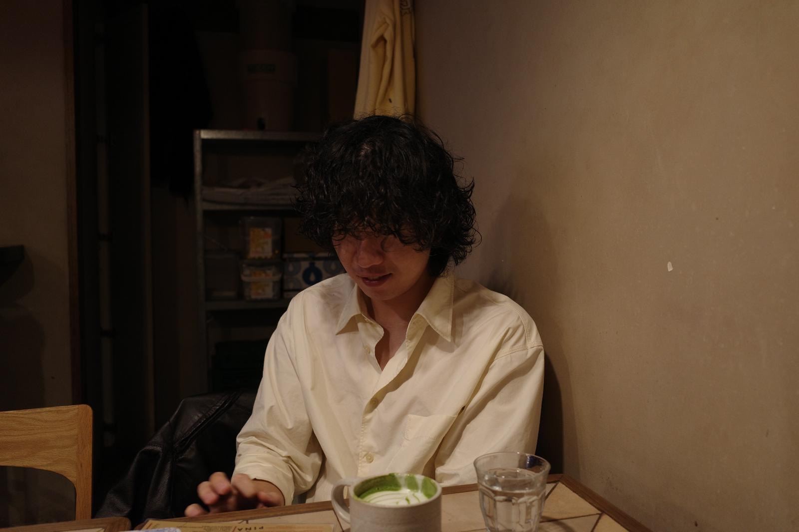

He is a producer who creates unique works with his own sensibility. With a strong background in visual
storytelling and viewer-centered work, he strives to create meaningful and impactful experiences that connect
with people on a deeper level. He enjoys exploring new perspectives and pushing boundaries. He believes that
every project is a chance to learn something
new and connect with people through visuals that speak louder than words. He's constantly inspired by
new challenges and always eager to learn and grow as a producer. Let's create something amazing together!
